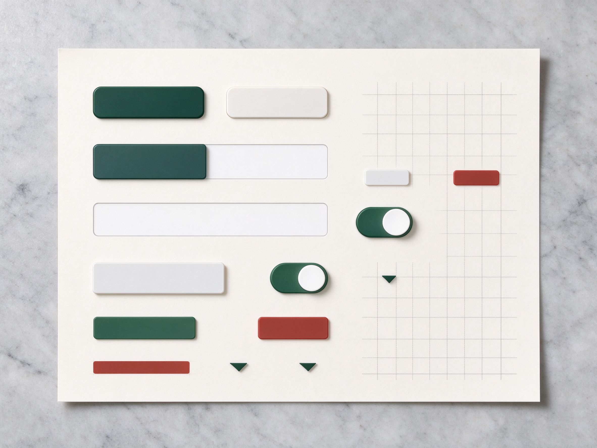

项目 · 6 个
每个项目都写清了三件事：当时难在哪、我做了什么、后来变好多少。
点开卡片看详情。没有堆砌截图，只写决策与结果——因为能讲清「为什么这么做」，比放了十张图更有用。
当前显示 6 个项目

「拾光」书店小程序
2025微信小程序 · 线上选书 + 到店自提 · 库存与支付打通
小程序全栈微信支付
「泰和茶事」品牌官网
2024静态化重构 · 首屏从 6 秒到 1.1 秒
前端性能SEO

「河图」运营数据看板
20248 块核心指标 · 增量推送 · P95 200ms
前端可视化WebSocket
「一行」订单与支付服务
202512 家门店 · 订单状态机 · 对账零差错
后端MySQL幂等

「云枢」多端管理后台
202514 周三期 · RBAC + 数据范围 · 越权归零
全栈Vue 3Spring Boot

Charming UI 组件库
202638 个组件 · 零运行时依赖 · 12 个仓库在用
开源前端设计令牌
这个分类下暂时没有项目，换一个筛选看看。